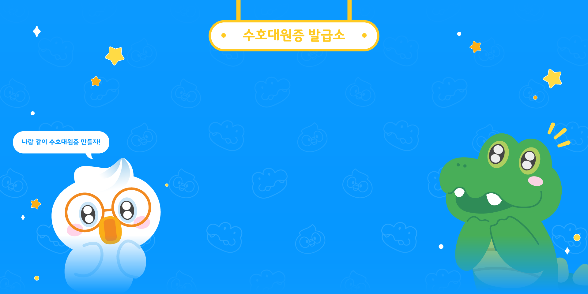
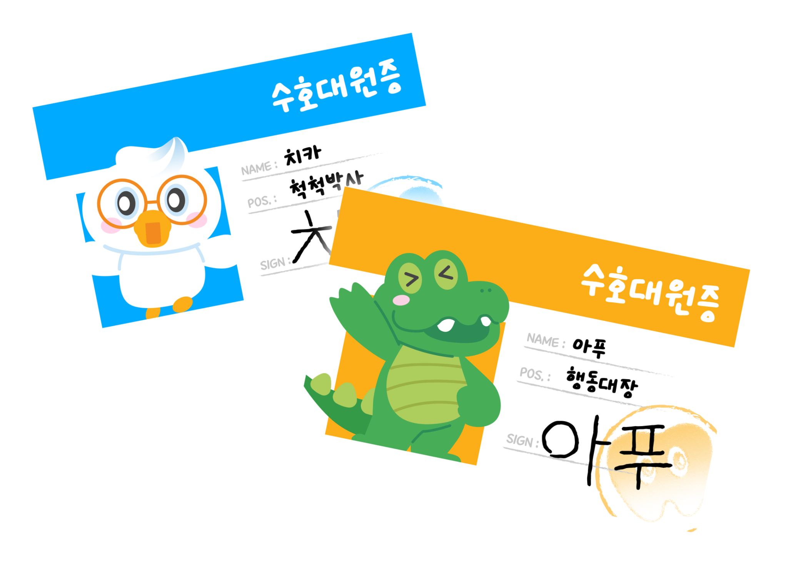

너의 이름을 알려줘!
어떤 역할이 좋아?
카메라를 보고 웃어봐!
왼쪽에서 함께 찍고 싶은 친구를 골라 주세요. 선택한 프레임으로 대원증을 만들어요.
수호대원증 발급 완료!
양치별 수호대원이
된 걸 환영해요!
대원증 저장하기휴대폰으로 가져가기
QR을 스캔하면 대원증을 저장할 수 있어요.
QR 생성 시 완성 이미지를 업로드하며,
다운로드 링크는 24시간 동안 유효해요.
휴대폰 카메라로 스캔해 주세요.
현재 비공개 사이트로, 휴대폰에서도 사이트 접근 권한이 필요해요.